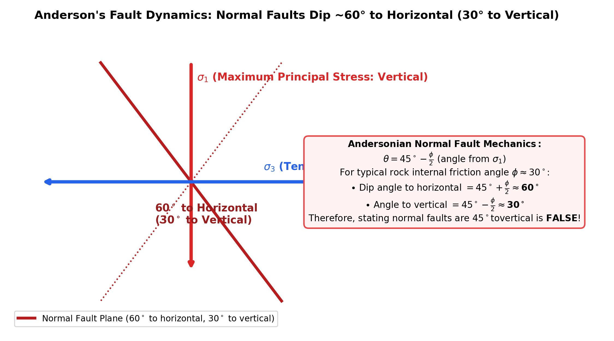
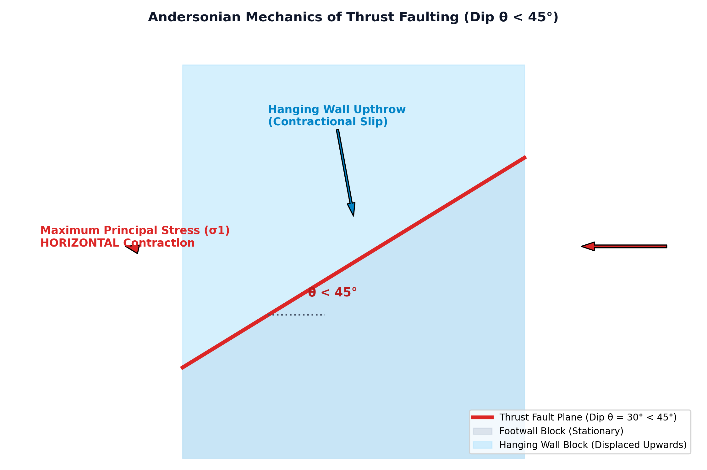
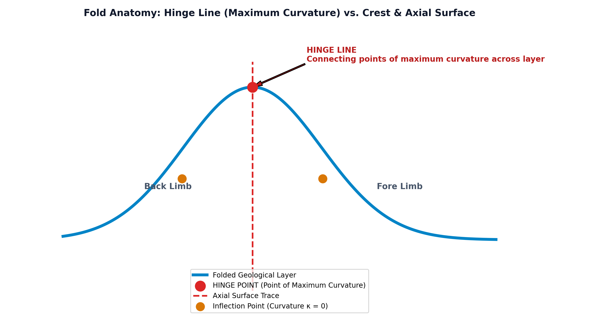
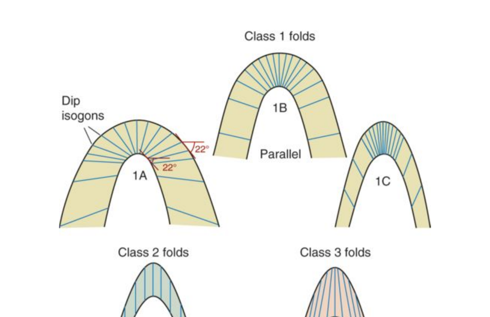
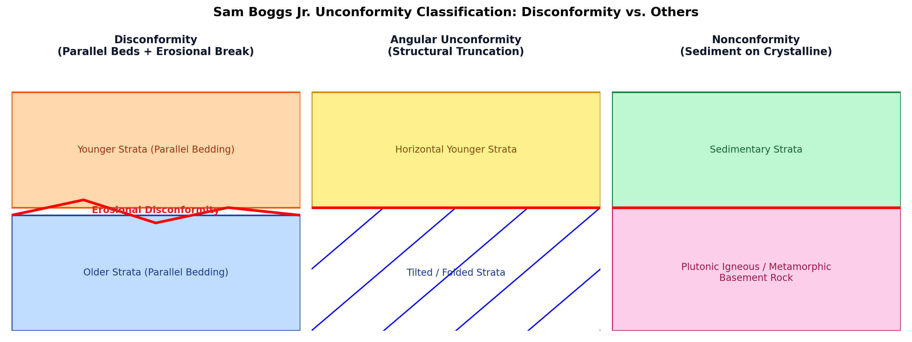
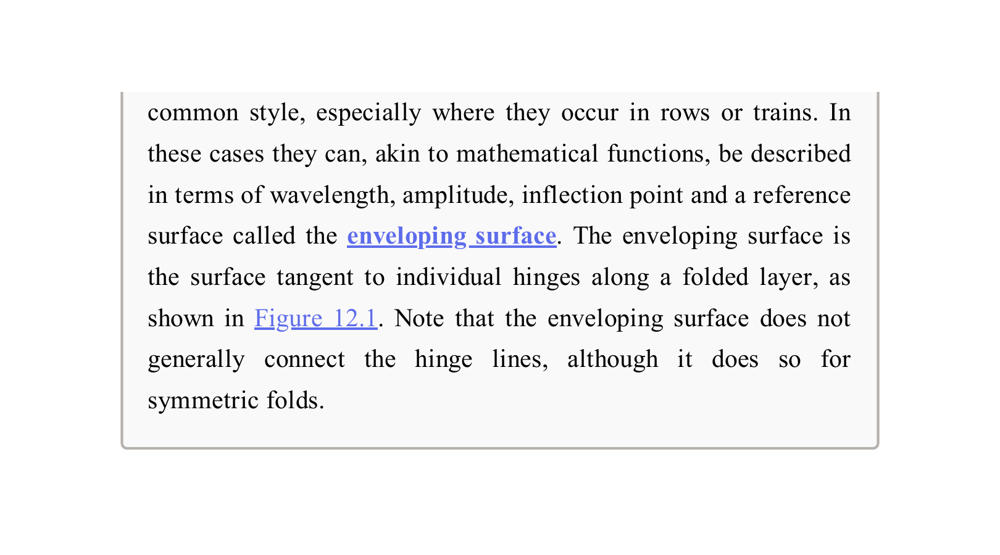
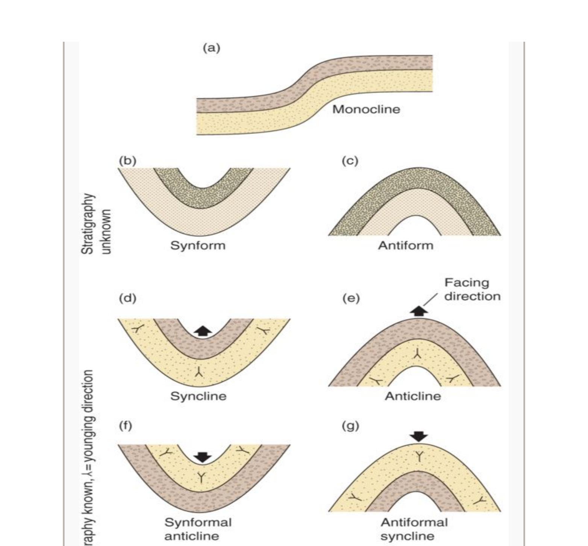
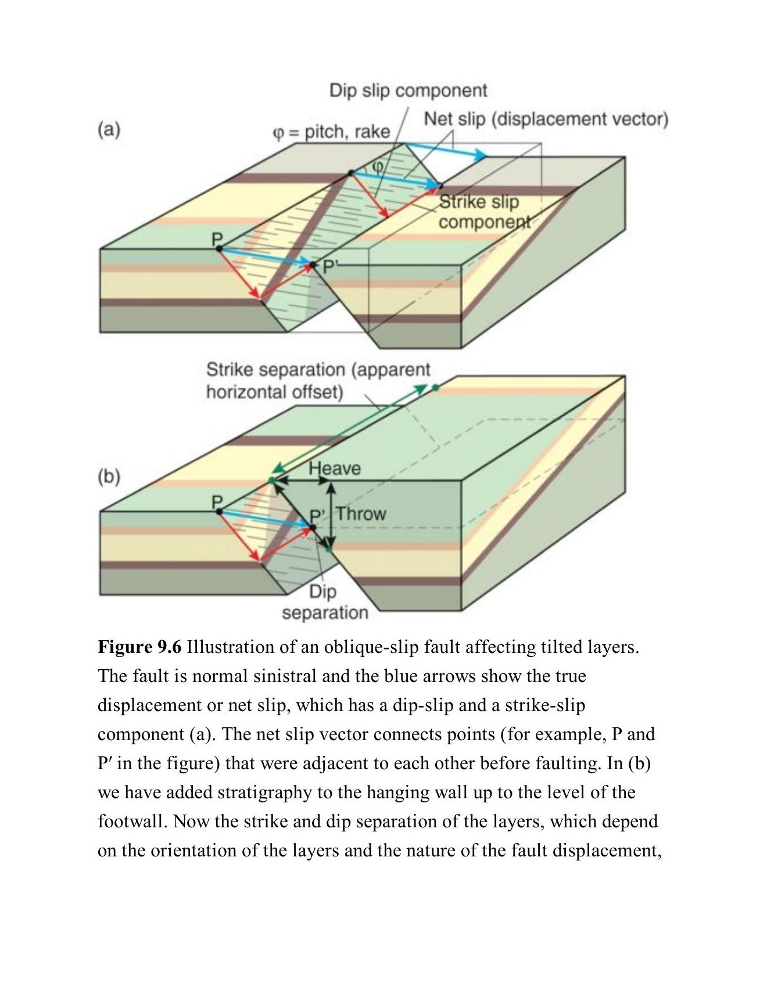

Wilke 5c. a me: a: ou, wou t = SSRN ATE a pi ie Geological Structure 7 Sree aeRO: 7.1. DIP AND STRIKE e The beds of undisturbed sedimentary rock formations generally occk ' horizontal disposition. During earth movements, the strata may be tilted of the horizontal, Such inclined rock beds are said to have a “dip" J j object of measuring dip and strike of rocks is to obtain information on t three dimension position. 4 7 STRIKE LINE Dip. The_angle of in- rn clination of u rock bed with FN HORIZON ‘Thehorizontal plane isealled = ZN 7m --~._# PER the “dip. Tis measured in "."s\ ig 4 plane perpendicular to the a? oF Dip One strike (Fig. 7.1). In addition NS a ot to the amount of dip, ils PoP” E direction must also he stated. RRSEK | Se 5 v4 oS kp A oF Dil The dip ungle is measured SSSNQ Me ae F with a clinometer and its 3 Jirection is measured with a Fig, 7.1. Strike and dip of an inclined bed: compass. An example of f recording dip is 60°, N4S°E, This Ly, aT RU i Means that the beds dip atan angle of "| gy 0) — 60° in a northeasterly direction. ay Ii te - 7.1L. Apparent Dip and True,” Hi E ip oe 5 ae a The “true dip’ is defined as the pf Y maximum angle of diponarock hed. 4 4 Up Mis measured in the direction at right Pe sccesseces 4 == MMEIES 10 the strike (ed in Fig. 7.2). TRUE DIP =
7.2.1 Elements of Folds Sp adrienne a
Anticline and Syncline. An “an ne, 1 Sf ie (ictine” is an up-lold where the limbs dip SATNAV G | So away fron the axis of fold on either side £4} NOI i EE (Fig. 7.3). A “syncline” is a down-fold 47: EG | ‘ where the limbs dip towards the axis of “, # fold on either side (Fig. 7.3). The highest. *— ANTECHINE™® gr AXIAL Plane Fig. 7.3. Anticline and syncline- in ans § point on the arch of an ansatsr tichine is called the “eresi" BS am) of the fold and the lowest Raion eathe aH point on the syncline is ma ERTS Reeth called the “trough” (Fig.
Vain | Ade: 7-4). A single anticline or! Dra syncline may range in size ee from a few centimeters to H Metter qi several kilometers across. '
7.3 Types of Fold




Symmetrical Fold. A “symmetrical fold” is one where the two limbs dip at the same angle bul in opposite directions. In this case the axial plane is vertical and it passes through the crest or trough (Fig. 7.5 (a)]. ¥ Asymmetrical Fold. An “asymmetrical fold” is one where the limbs. dip at unequal angles in opposite directions. In this case the axial planc is inclined ead it not necessarily passes through thc crest line [Fig. 7.5 (b)}. ced ~ w 4 Fis 7.5. (a) Syeanetrical fold. (b) Asymmevical fold * (€) Ovenurned fold. (d)Recumbent fold Overturned F ‘i Pest the vertical, In these 20 28smmetrical fold whose one limb is tuned dip in the same direction, I, fps re lied snd boty the Himbs Upside down Fig. 7.3 (oy) 2 O*eTUMeM fold the lower limb is turned Recumbent Fold. In ~ 2 both the limbs become skin ee eles + the folding is so intense that becomes nearly horizontal and In this case the axial plane also ‘er limb gets overiumed | Fig. 7.5 (d)]*. E a PF ae 3 eer os a i “e > GEOLOGY STRUCTURES 213 In recumbent folds fractures usually develop across bends io produce overthrusts (Fig. 7.6) J Gi Cir 2 OT Cpr aS cae i a
aurata are said to have a b”. A “basin” may be defined as adown-fold where the bed: F CREST ly inward towards the cenue [Fig. 7.12 yon t ets Fan Folds. A “fan fold’ is an by eres upright fold in which bath the limbs a ey cole 4 age overturned. In anticlines limbs dip kee fy towards the axial plane and in e\ Lf synclines they dip away from it. The ya ofss beds within the anticline are much [\ Wi" LE Po, compressed below while they open out KS WN" ff fy ' above (Fig. 7.13). The crests and SSSQ i Wd 2% troughs of fan folds ure generally suf- Sy AWeteg ficiently rounded. fig 1 13. Fan fold; Chevron Folds. The folds which have straight or nearly straight limbs, their crests and troughs become sharp and angular. Such zig zag folds are called “chevron folds” (Fig. 7.14). crest DIPPING STRATA KN ee
Monocline. A local warping in the horizontal strata is called ths “monocline”. In this case the rock beds lying at two levels are separated by |. a limb which shows steep inclination |Fig. 7.6 (a)}. A monocline is formed — PRINCIPLES OF ENGINEERING by the vertical movement, A Jault is general " Haas below most motioclingsiaim The width of monoclines are often several kilometers.; a N ai
. NCOMpEtEnt rack hed. p plastically during ton sie See ae those which hec=me mobile and Now 4 to place. An cxanple of fred i Show variations in thickness from place a 'PCleNL rock is shale. The “competent beds". # / ey GEOLOGY STRUCTURES are | ae on the other hand, show greater rigidity and their thickness remains une changed during folding. An example of competent rock is sandstone 7.4. MECHANICS OF FOLDING j All rocks do not respond in the same way to the same forces. Depending i on their reaction to folding, the rocks are classified into two groups: (1) im competent racks, and (ii) incompetent rocks. Competent rocks arc the resistant rocks which bend and crack without much flowage and incompetent rocks ure the weaker rocks which deform duc to plastic flow. The folds that 2 develop in these rocks are of three Types: (i) flexure folds, (ji) How folds and (if) shear folds. a Flexure Folds. The true folds that are formed by the compression of iti competent rock beds are called the “flexure folds". These folds are frequent- ae ly larger and their outlines are relatively simple. = Flow Folds. The incompetent rocks behave like a thick paste and therefore they can not transmit pressure easily. The “flow folds” that are lf formed in the incompetent rocks, are accompanied by rock Nlowage. In flow } 4 folds the rock material flows into the crest and trough thereby causing thinning and thickening of beds. Many SHEAR PLANES } ia minor folds frequently develop in the in- es ae 1 competent strata (Fig. 7.17) Y UY TTA Shear Folds. The “shear folds” are Yyyy Yeti, le produced in brittle rocks by the movement {// Gr Min, | a on minute closely spaced fractures called (OM: the “shear planes”. ‘These shear planes Wy Ye. ai Ucvelop across beds and thin slices of the AYUMI Me oe rock nove in relation to each other there- Fig. 7.18. Shear (ott be. by forming a fold (Fig. 7.18). Bie With increasing distance from the source of pressure that causes folding, ie the folds gradually die out hoth in the horizontal and vertical directions,: q 7.8. RECOGNITION OF FOLDS a Recognition of folds in the field is not always easy. All the limbs of the |, ae fold are seldom visible and therefore a systematic study is required for identifying folus. The features which help in recognizing folded strata are | aS as follows. a 1. In some areas folds are easily inferred by the topography. Aerial a photographs are used for this purpose.
2. The repetition of outcrops of rocks suggests the presence of a fold i (Fig. 7.19). in such cases care should be taken to eliminate the Possibility of a fault.:
3. LV fold is of open type, the reversal of dip direction is enough to identify folds (Fig. 7.19). In anticlines the oldest rock bed will q pce es 4 218 PRINCIPLES OF ENGINEERING GEQLOgy biP x occupy an axial = sche: _— ay position and in SERED a: youngest bed will ar fase oe ve ’ Pie occur there. Cpe bia 8 ook 4, Plunging folds as [$* # # 4 1 4 $s see a rule, give rise to Fig. 7.19. Repetition of outcrop. a curved outcrops % the apex of which is called a “closure” or “nose” (Fig, 7.9). 5. In case of the overturned and isoclinal folds where all the limbs dip in the same direction, detailed observations are necessary tg j identify synclines and anticlines. The features which aid in finding out the top and bottom of a rock bed and hence the synclines and Be anticlines are drag folds, rock cleavage, cross-bedding, oscillation ripple marks, graded bedding and mud cracks. oo ae (i) Drag Folds. These folds show characteristics which are’ i us similar to major folds. As a rule the axial plane of a drag fold — i is roughly parallel to that of the major fold of which it isa part, This provides a very useful means of knowing the I general symmetry of the major fold (Fig. 7.17). a (ii) Rock Cleavage. The flow cleavage or slaty cleavage is. ‘ formed due to parallel a orientation of platyand = sepDinG BEAT YS CoA ae flaky minerals. This a i cleavage develops Xa) a parallel to the fold axis | Be i and therefore it can be aS $ used in the study of a + major folds (Fig. 7.20). Fig. 7.20. Slaly cleavage. 7, (iii) Cross-Bedding. In cross-bedding the laminae of the rock are tangential to the true bedding at the bottom but form sharp Y angles at the top (Fig. 6.3). - Bo: (i) Graded Bedding. In a graded sedimentary bed, the coarser i ig. Ina g lary grains are always at the bottom (Fig. 6.2). a - (v) Mud Cracks. In mud cracks the tapering end indicates the bottom. 2: ee A “fault” may be defined as a fracture along which blocks of rock have 3 Resn displaced relative to each other. This planar discontinuity originates by by nic Forces acting regionally, The displacement along a fault may be less ki: oad geoLOGY STRUCTURES ’ 1 hundred met a than a meter, several heters or many k; tensional as well as compressional forces, » Milometers Faults result from
7.6.1 Fault Terminology
‘ Kault Plane. The fracture surface along which relate taken place, is called a “fault plane” (Fig, 7.21), The pele ot hoth the fault plane and the displacement that has occurred clone rape plane may be markedly curved or in some cases undulating. In ste atk clearly defined fault plane there may be a number of Parallel shear fractures along which the fault movement is distributed. Such a fracture zone is called a “shear zone”.
d FAULT PLANE K Foe wate t WADE. ory fas THRow! i IN - 9 wang QE] H 6 OO WERE SESE ve THROW Downs THROW zy SIDE SIDE F
Dip. The dip is the angle the fault plane makes with 2 horizontal surface Strike. The “strike” of a faull is the direction of its continuity on the ground surface, It may be defined as the tend of the line formed by intersection of a fault plane and a horizontal plane (Fig. 7.22), such as the ground surface or a map surface.
Throw. The vertical component of the displacement of fractured rock blocks, is called the throw of fault (Fig, 7.22). The side on which the stata appear to have thrown down is called the “down throw side” while ae ae side on which they appear to have gene up is called the “uy tons (Fig. 7.21). (sigan is i: cement of a fau! i Heave. The horizontal component of the display: ton of called the “heave. It is the horizontal shift of strata as seen in 2 mene ah: ult plane is called ah.
Net Slip. The total displacement measured sons art be phim ceigically the “net slip”. It is measured between the [Wo pot s Sid eS in contact (Fig. 7.27). The movement along the fault plane can be resolved into two component directions, dip slip and strike slip. or. Strike Slip and Dip Slip. “ip slip” is movement parallel to the 4 direction of dip of the fault plane. The movement which is parallel to the a strike of the fault plane is called “strike slip” (Fig. 7.27 (a) and (b)}. ie Fault Scarp. A “fault scarp” is the cliff formed initially along the q up-throw side of a fault.!
Hanging Wall and Foot Wall. If the fault plane is not vertical, the block of rock lying above it is known as the “hanging wall", and the block blow the fault plane is known as the “foot wall” (Fig. 7.22 and 7.23). Vertical 4 faults have neither hanging wall nor foot wall. q Fault Zone. Most fault planes are associated with a zone of crushed or altered rocks. This zone is called the “fault zone”. When several parallel i faults occur close together, the resulting zone of broken and crushed rock is called the “shear zone". A shear zone differs from a fault zone in that no ay | distiner fault planes can be detected because here the local deformation is i ductile. The fault yones and shear zones vary greatly in width and in some cases they are measured in hundreds of meters.: a i 7.7. CLASSIFICATION OF FAULTS = Classification-1. On the basis of apparent movement the faults are classified into two groups: (/) normal fault, and (ii) reverse fault.:
By Normal Fault. A “normal fault” is one in which the hanging wall aA appears to have moved downward relative to the foot wall [Fig. 7.23 (al.; In this case the fault plane dips toward the down-throw side. Generally i normal faults are produced by tensional forces and they are also called the i “gravity faults". These faults indicate lengthening of the earth's crust, The Bi subdivision of Ute crust into blocks by normal faults is called lie "block faulting”. Normal faults usually have a high angle dip.. 3 F & me ‘ HANGING me 3 WALL 5 By t Foor 4 a4 Wau pe = 3 a iat KANGING Foor WALL SS WALL: 3: zs Fig. 7.28, (a) Normal foul, (b) Reverse fault, a everse Fault. A “reverse fault” is one j 5 i is one in which the hanging wall appears to hav. r Bing, s ve noved upward relative to the foot wall [Fig. 7.23 (b)| In @goLoGyY STRUCTURES \!
jx case the fault plane dips toward the up-tkrowy sae be usually high angle faults. They are mes The reverse fault, These faults indicate shortening of the earth's crust, Compressicnal forces. k Normally reverse faults have dips of the it compression produces [ow angle reverse fei a (v) more. Joa i 7.6). Thrust faults may curve at the bottom io merge with Wlarissts™ (Fig. H ‘horizontal or low angle thrust fault in which thetic la. hi filed the “overthrust”. The displacement of eines aa is large. ig | in kilometers. The sheet of rock that has moved forward treasured \ plane is called the “nappe". Isolated pants of peta cnc = thrust i tn the underlying strata are known as the “nape outlier “Uppe Fie |; Classification-II. On the basis of relationship between the str fault and the attitude of strata, the faults are classified into five lc | dip fault, (it) strike fault, (if) bedding fault, (ix) oblique faul, and cy wee or wrench [ault:
Dip Fault. A fault’ which Strikes Approxismately parallel to the dip direction of beds, is called the’ “dip fault” [Fig, 7.24 (a)]. Ag L (ES ff | Ee '
ley) FLA ss fing faut, (2) Obligoe foul ‘ = Fig, 7.25. (a) Bedding fault.: jl ee EY i Ee i 222 PRINCIPLES OF ENGINEERING GEOLOgy i Bedding Fault. A bedding fault is one which occurs along a co 8 between beus of different or same lithology [Fig. 7.25 (a)]. The bedding t faults are Jifficult lo recognize. ae ( Oblique Fault, A fault which runs oblique to the strike and dip direc. 3 tions of strata is called the “oblique fault” (Fig. 7.25 (by). When a fault ' strikes diagonal to the dip of the regional structure, il is known as the “transverse fault”. E Tear Fault or Wrench Fault. In a strike-slip faulting the relative dis- VA, oak: placement of the blocks is horizontal. he wa co The fault plune of a strike-slip fault is Lamy / Ary E more or less vertical and often ex- ny tends for long distances. Because ay Be these faults frequently strike across Ye 2 the trend of folds, they are called a i “transcurrent™, “teas” or “wrench” bt a faults (Fig. 7.26). 4 pk Classification-II. On the basis 8 of the degree of dip, the faults are a classified into two groups: (i) high “REM CH FAULT 4 angle faults anil (jf) low angle faults. Fig. 7.26. Tear or wrench fault,; High Angle Faults, The “high angle faults” are those which have a dip greater than 45°, Noral faulis are commonly high angle faults.:
L Low Angle Faults. Thc & “low angle faults” are thase a a which have a dip less dian a 45°. Thrust faults are com- =. monly low angle faults. 4 Classification-IV, On the basis of the relationship q between the direction of slip > ae and the attimde of the fault CA? EY Plane, the faults have becn a classified into three groups; a (i) strike-slip fault, Gi) dip- a 3 slip fault, and (iii) oblique- ee ‘| ‘< slip fault, = t Strike Slip Fault: ‘in be ae “strike-slip faulis” the ~ cer 4 Fi movement is essentially Fig. 7.27. (a) Suike slip fault (ub = strike slip = a fe Sctpeeu along the strike of _"¢ Slip}. (b) Dip stip tault (ab = dip slip = net 4 iis I LFig. 7.27 (a)]. These SP) (©) Oblique slip faul: (ac = strike fall. b= dip slip. ab = net slip) i A ee Bik geouosY STRUCTURES 1 | yh alts usually have Very steep 10 vertical dips. bas i } Vg jpip Slip Fault. A fault in which movement is es | ayong te dip ot fault, is called the “dip-stip fault” [ foriey Aoee \ cae Oplique Slip Faull. A alt in which the diction of mw 1 i jagenalt both the dip and tke of f0 sealed the “bi arerent ss i= Fig, 7.27 (il ique slip fale i ia =e Classificution-V. On the basis of the forces res 4 im? sponsible to on of faults, Ue faults have been clase ito for aA ton faults, (i) compressional fouls, (i) tanscurret eget y a! pivotal faults. eh a i y Gravity oF Tension Faults, These fuls fone bytes! oe | wea sanjele pl the eamh’s crust apart, Normal faults are the examples of his = t e group. 4 Compressional Faults, These faults arc caused by the compressional | | weo forces which produce folds as well as faults. Reverse faults and thrusts j es belong to this group and they are commonly associated with folding, A:. ‘Teanscurrent Faults. These faults are caused by the lateral thrust. Tear 3 or wrench faults belong to this group. Transcurent faults exhibit mainly: horizontal movement. ° Pivotal Faults. These faults are caused by the rotational stresses amd ‘ the movement involved is inainly rotational. { Classification-VI. Faults usually occur im groups. ‘When a oumber of 4 faults occur together, they form a "fault syste”, On the basis efi pattern, the faults are classified imo seven geoups = ()) parallel faults. i) |: step faults, (iff) graben, (iv) horst, (») enechelon faults, (7) peripheral faults, | P and (vii) radial faults. el Parallel Faults, A series of faults that have the same soike and dip are i q called the “parallel faults”. Such-Faults ram parallel 19 o9¢ amother and all trade in the game direction with the sarne angle (Fis. 7.28) it YUL TTA 1 Esse ODDO = TTT \. Fig. 7.28, Parallel fault. a Jie 44.10 those parallel faults Step Faulis, The term "sep 008" nese fas He Where the down-throw of all are in the SUME TET 7 29), ee © down.thrown blocks produce.a step-like struct 3; ons dae enn Graben or Rift Fault. “Grabens” are loug and relatively narrow faut, parallel high Fs 4 a troughs bounded by parallel hig GRAREX =e.
+ angle faults. This structure is —___ \ Me ree ey t produced when the (wo parallel nor- = ce mal laults hade towards cuch other \\emmineanomey? & j and the rock beds between tem are =: thrown down under the influence of a a = a gravity forming a topographic low Fig. 7.30. Graben, if a (Fig. 7.30). Tensional crustal forces — which pulls the crust apart are responsible for the formation of rift faults, Ret Grahens typically occur along crests of upwards. ES: Horst. When two parallel normal faults hade away from oue another anu the rock block between them is uplifted to form a ridge, the structure is called a “horst" (Fig. 7.32). & ner Lo AS La Fig. 7.31, Horst. Fig. 7.32, Enechelan faults. ae i Enechelon Faults, These are relatively short faults which overlap each other (Fig. 7.32). a a Peripheral Faults. The curved faults which have nearly circular or ae are-like outcrops on level surface, are called “peripheral faults” (Fig. 7.33). i Ce) # LENG SY YY e j a F a 1 f ee Peripheral fault Fig. 7.34. Radial fault. aa = ce A number of faults exhibiting a radial pattern on the a 2 _ ‘uctace are called “radial fautis” (Fig, 7,34), ss e 8. aba OF FAULTS ON OUTCROP ae fects of Dij 3 ‘ies; diplacercar a te Faults, The effect of the dip faults is to cause a lateral: ops of the disrupted strata (Fig. 7.35). The amount TURE!
40108" STRUCTURES; of asplacement becomes less with the increase in the dip of rock 7 7. 8 in the vertical strata the displ: beds and od ze | crop will be nil, placement of out: 1 i i P 7% WX i i uae;
‘cause the repetition of We the outcrops of the 7 i disrupted strata or lO if M3 4 eliminate the outcrops ff of some of the beds al- / outcrop occurs When & on rc) strike fault hades in: bgt.g Fig, 7.37. Omission of puterep: huidiccellpn, Cone {a Strike fasting, (6) After denudation: to that of the dip of i 4 strata (Fig. 7.36). Omission or concealment of outcrop occurs when 2 strike i in the same i the dip of ps, 4 strata (Fig.
of Faults an i Folded: ‘ Strata. In‘a (a) even syncline the (a aa syncline, ened f ffect of faulting 0-4 ¥Y es he ee Fe alas (b) After denotation + the limbs ‘ tiesn Be: 7 fe the reverse applies"n aa 5 come closer on the up-throw side. (Fig 738) while the Ae Be case of an anticline Fs 2 Z Aw ‘ LR RNA TI 226 PRINCIPLES OF ENGINEERING GEOLOG): 7.9. EVIDENCES OF FAULTING 4 sterna for the recognition of faults in the field can be divided into. ficeergoest Gh rrtegical evidences, (i) fault plane evidences, and (iti), physiographic evidences. a
7.9.1 Geological Evidences 4
The geological evidences are seen very clearly on the geological maps. The most important ecological evidences of faulting are: @ offsets of-rock: units, (#i) repetition or omission of strata, (if) abrupt termination of struc tures along their trend, (iv) surala out of stratigraphic sequence and (v) ab rapt change in the attitude of strata. fe Offsets of Rock Units. Displacement of rock beds, dykes, veins, etc. ‘occurs on opposite sides of a fault,, 4 Repetition or Omission of Strata. In a traverse line, the outcrop of a bed may be repeated in cyclic order or it may disappear altogether. Such a repetition or omission of beds often establishes a fault. a Abrupt Termination of Structures. The strata, dykes, veins, folds or other structures may end abruptly against a fault line. Such termination of structures along their trend is usually caused by the dip and diagonal faulting. The lost portion of the structure may be concealed under water, alJuvium, lava or younger series of beds. a Strata Out of Stratigraphic Sequence. The normal stratigraphic sequence of a region may be disturbed by faulting. When older strata oc ‘ur above younger strata, faulting is indicated. a Abrupt Change in Attitude of Strata. When the strike and dip of sata changes suddenly, faulting is indicated. 3
7.9.2 Fault Plane Evidences ee
The fault plane evidences include the minor structures which are found associated with faults. They are observed in the immediate vicinity of faul planes, The most important fault plane evidences are: (@ slickensides, (ii drag, (iii) fault breccia and gauge, (iv) silicification and mineralization, ant (v) feather joints. a Slickensides. The movement of one wall against another results in polishing and grooving of fault surfaces. These gruoves and striations are called the “slickensides”, Slickensides are useful in knowing the direction of the'latest movement on a fault surface. Slickensides are commonly asare a faults and are formed along the fault planes. In addition 10 4 ‘i may also contain small steps-like features facing 10 erpnounced sacl oriented more or less normal to striations. Mor arc Langer thasi Tickeaace along the fault planes are “nuiliions”. Mullions nei sides and are not easily erased by subsequent MOVE Drag. anil daiSnaieaes 3 wa displacement, is called the “drag” ending which is caused by the fu along a fault, rag”. It indicates the direction of move! ea — ee oe GEOLOGY STRUCTURES zz Fault Breccia and Gouge. Along some faults the rocks are found highly fractured or even crushed to angular fragments. Angular fragments embedded in a matrix of finely grounded rock are called “ fault breccia”. Fragment size of fault breccia may range from microscopic to serial cen- » timeters, Secondary minerals such as quartz, calcite or sometimes pyrite may fill open spaces within the fault breccia. When the dis- Fig. 7.39. Drag on faults. locating forces are very severe as is frequently the case in thrusting, the rocks may be ground lo fine clay like powder called the “gouge”. The gouge is frequently polished and striated by the fault movements. A microbreccia that fills faults in wider zones of intense deformation is called the “mylonite™. PDEs Silicification and Mineralization. Circulating |’- 7 Ly457"" water while percolating through a fault zone may |.*, 34% j es = deposit fine grained quartz, causing siljeification. Fault }.° Pe, 4 oe planes also act as passages for mineralizing solutions |: *: SRE is and many mineral deposits are formed in the fault plane |, “yA 7 itself. Meleniy FE es Feather Joints. Feather joints are the tension frac- |?.."-7 4, en tures formed duc to fault displacements. They common-|: >! °.’.4.'7-: ly develop adjacent to major faults. The feather joints ae P piles ts duccdlon of nsevecet along the Tull (Fle poe ava
7.9.3 Physiographic Evidences
The physiographic evidences are scen clearly from a distance or on an aerial photograph. It may be noted that physiographic evidences are not conclusive. The chief physiographic evidences are: (#) fault scarp, (if) fault line scarp, (iii) offset ridges, (iv) fault control of steams. and (v) lines of pond, springs or water sccking plants.
Fault Scrap. A steep straight slope of a ridge is called the “scarp”. Fault scarps are the scarps formed as a result of faulting. They are found only in those areas where faulting has been geologically very recent. Fault scarps face in the direction of the down-throw side.
Fault Line Scarp. Faults frequently bring together resistant and nonresistant rock beds. A ridge may be formed along.a fault due to the process of unequal erosion. Such ridges are called the “fault line scarps". They muy face either in the same direction as the original scarp or in the opposite: direction. In the later case the scarp is called the “obsequent fault line scarp”. 4 i Offset Ridges. In regions where resistant rock beds are displaced along 4 se |. a fault, “offset ridges” arc torned. 14 ‘a Fault Control of Streams. Streams may be guided in the direction and”: course of their flow by faulting. Such stream inay follow a nearly straight” line or make approximately right angle turns. 3 Lines of Ponds, Springs or Water Seeking Plants. Linear arrangement ‘of ponds, springs or water seeking plants may concide with the alignment — of faults. aia The various criteria discussed above, are snastly indicative of faulting. Individually they do not give any conclusive evidence, Besides some-of ial these criteria also suggest other struchires, such as unconformities and folits,! Usually a combination of several criteria is required for the establishment ee of a fault. ea 7.10, SIGNIFICANCE OF FOLDS AND FAULTS a Z| Folds and faults arc of major significance (o industrial geologists bol By: cause they often form structural traps for valuable mineral deposits. Faults that develop above an intrusive granite allow mineralizing fluids to pass unto i the overlying rocks. The deposits of minerals such as lead, tin, Zinc and eu copper ores are formed in this way: Faults that do not reach the surface may i form channels through which oil and gas can rise. In synclines where porous — i sand beds overlie impermeable clays and shale, collection of water form — (v) reservoirs which produce artesian springs.; i | Correet interpretation of folds and faults is essential in mining. For example, recuinbent folding and reverse faulting can cause coal seams to be repeated vertically, while normal faulting can cause a horizontal gap. A coal 3 scam may thus be passed through several times in drilling or alternatively missed altogether. “3 Along a fault zone, highly crushed and sheared rocks are met wilh. These zones being weak, unstable and highly permeable, pose expensive — problems in civil engineering constructions, such as dams, reservoirs, (ull= > néls and highways. 3 7.11, UNCONKORMITIES a ae alneary rock beds are Found to have been deposited pees a ee said to be “conformably”, Unconformities are, scitngleal aed is in sedimentation, This creates a gap in the a '? Sie te aha bree ia gelimentallon are called “unconfar: uhleh separnes your sates ee.: ined as an old erosion surface — f ‘ities represent an interval of time of ake the older series. Unconfelagl™ eS, erosion of the underlying stata before the deposhcg of te cael the. ©:- 7 = ¢ deposition of the overlying racks.
OED ARSE GEOLOGY STRUCTURES
7.11.1 Types of Unconformity
Unconformities are of three types: () angular unconformity, (ii) disconformity and (iii) nonconformity. i Angular Unconformity. The rock beds an opposite sides of an “angular unconformity” are nol parallel [Fig. 7.42 (a)]. The angular unconformities occur where the older | pe series of beds have been tilted, deformed and eroded* [32st gpa se EDP before the deposition of RSS younger beds. Ca me aan?
Disconformity. The = Pree: ieee’; REESE ecm rock beds on opposite sides SERENE S of a “disconformity” are | fap parallel (Fig. 7.42 (b)1. Dis- cn conformityes occur where | ==: the strata of the older series ( have not been tilled or *F es S555 i deformed in any way before aM the younger rack beds were ~ Ce deposited above them. They Fig. 7.42. (a) Angular unconformity, represent either a period of (b) Disconformity, (¢) Nonconformity. i non-deposition or a period: i of erosion. 3 et Nonconformity, When bedded sedimentary rocks overlie: the non. f bedded igneous mass, the structure is called the “nonconformity” (Fig. 7.42. > yy
7.11.2 Recognition of Unconformities 4
The factors which aid in recognizing the unconformities in the field, are as follows. = (i) Difference in Structure. The group of rocks on either side of an unconformity may show structural discordance. a (ii) Difference in Fossil Record. Rock beds lying below an unconformity surface commonly contain faunas which do not occur in the rocks above. Moreaver fossils in the younger series may be of higher evolutionary rank. This suggests that a gap exists in the succession of rock beds. 4 (if) Presence of Conglomerate. At an unconformity a bed of conglomerate is commonly found at the base of the upper series of ' rocks, Such conglomerates contain fragments of the underlying i rocks. j (iv) Fossil Soil. Subacrial weathering profiles may be preserved at an i unconformity as clay rich reddened or ocherous horizons. 3 t (x) Difference in Environment of Deposition. Association of such rock beds which were formed under contrasting conditions, indicates the presence of an unconformity. For example, nonmarine beds overlain by marine beds, or cross-bedded strata overlain by strata showing graded-bedding. a (i) Relation to Intrusives. Unconformities may be recognized by truncation of volcanic necks or other volcanic intrusions. a ii) Difference in Grade of Metamorphism. The younger series of & ' rocks are likely to be Jess metamorphosed than the rocks of older series. a 7.12. OVERLAP 4 In some cases the junction between two series of beds is sinooth and Fepresents a gently slop- a ing old land surface a which slowly sank OLD Lann suarace ae below sea level. As a Ee Series of rocks were) === ee ee NNN beds, each new bed in € - tim ac Kant a in SPER N SS i More and more on the Fi. 7.43, Overlap, a on old land surface, U; anes aa Bar » Unconformit i Bee a ilies of this (ype are known as the “overlap GEOLOGY STRUCTURES 231 7.13, JOINTS When rock masses are subjected to tensional or compressional forces, regular or irregular fractures develop in them. Such fractures along which there has been no relative displacement are called “joints”. Joims vccur in 1 almost every type of rock. They may be vertical, inclined or even horizontal. j Commonly rocks contain a large number of joints which fic parallel to one another. These parallel joints together form a “jomnt ser”. Very often two i or more sets of joints occur in rocks which break them into large nearly H rectangular blocks. Two or more sets together constitute a “yoint system” 1 Since joints have well defined fracture surfaces, their position in space is recorded in terms of dip and strike. The dip and strike of jomts are h measured in the same way as that of sedimentary strata
7.13.1 Classification of Joints i
Classification-I. Depending on the mode of formation, the joints arc classified into two groups: (i) tension joints and (1i) shear joints. Tension Joints. "Tension joints” are those which LEFE are formed as a result of ten- Get, 7 signal forces. These joints STRIKE rownTs gery” hpi arc relatively open and have | SEL pe Lo rough and irregular surfaces. Hae The columnar joints in MER ET 2 lava flows (Fig. 7.45) and the Loy <> longitudinal joints in an- i <y ticlines that run parallel to af i Hi the fold axis (Fig 7.44) are Fig. 7-44. Anticline showing sirike the examples of tension ‘ints formed due to tension joints.
Shear Joints. “Shear joints” are those which are formed due to com: pressional forces involved in the folding and faulting of rocks. These joints are rather clean cut and tightly closed. Shear joints occur in two sels which lk intersect at a high angle to form a “conjugate join system”.
Classifivation-II. Depending on their attinde and geometry, the joints fare classified into three groups: (i) strike joints, (i) dip joints and (111), oblique joints.
Strike Joints. The joints which run parallel to the strike of country, ai rocks, are called the “sirike joints” (Fig. 7-44).:
Dip Joints. The joints which, ran parallel to the direction of dip of the country rocks are calledthe “dip joints”.:;; Oblique Joints, The joints which ran oblique 10 the dip: and sirke 8 PY directions of the country rocks, are called the “oblique joints”. ‘ to" ean aoa. es ot agp PRINCIPLES OF ENGINEERING GEOLOGY
7.13.2 Description of Common Joints y
Bedding Joints. The joints which are oriented parallel to the bedding planes in seditnentary rocks, are called the “bedding joints”. 3 Master Joints. In sedimentary rocks, the joints usually run in two directions at nearly right angles, One set of joints run parnilel to the dip. direction and the other parallel to the strike direction. OF these, one set of i joints is commonly more strongly developed and extends for long distances, t Such well developed joints are called the “muster joints”. 4 Primary Joints. In igneous rocks, joints are formed during cooling and! contraction of magma, Such joints are called the “primary joints". The; primary joints are of following types.
3 (i) Mural Joints. Granites commonly show three sets of joints mutually at right angles which divide the rock mass into more or ess cubical blocks. Such joints are called the “mural joints.
(ii) Sheet Joints. Sheet Joints are often seen in the exposures of granites. These joints run in the horizontal direction and are formed as tension cracks. They are believed to have developed by, unloading through removal of overlying rocks by erosion, The i sheet joints are some what curved and are essentially parallel to the topographic surface. They are 4 more conspicuous and close couumnan sows 3 together near the ground surface. \:.
(ii) Columnar Joints. Columnar joints q Rt are formed in wbular igneous mas- 3 ses such as dykes, sills and q lava flows. These joints divide the q Tock masses into hexagonal, square,: thombic of triangular columns (Fig.
7.43). Such coluunus develop at right angles to the chief cooling surface. q In favas and sills, the columns are " vertical while in dykes they are a nearly horizontal. Fig. 7.45. Columnar joints.
7.14. CONCEPTS OF STRESS AND STRAIN i: aia ar applied to a rock mass can be resolved into three i ica; masse » When the sale of seat ame as greatest, intermediate, and least. to be hydrostatic. Under sich sues sai dual the stresses are said i while its sh; ee esses only the volume of the rock changes ape remains the same. When th, 2 gi deformational force operates sae ic siresses are unbalanced, a “which chaiges the shape of the rock.
GY STRUCTURE! Application of stresses produces a “strain. The distribution of strain ‘s along the principal stress axes gives rise to strain uxes. These strain axes are H as follows. i (i Axis of Least Strain. The axis of greatest stress is the uxis of greatest compression, Henee itis regarded os the “axis of feast. sirain”.
(i) Axis of Greatest Strain, The axis of least stress is the axis of rs least compression. Hence it becomes the “axis of greatest strain”, (ii) Axis of Intermediate Strain. The axis of intermediate stress becomes the “aris of intermediate strain”
7.44.1 Strain Ellipsoid
The strain ellipsoid in an imaginary figure. It is produced when a sphere of homogeneous rock is subjected to a deforming stress. In this ellipsoid the orientation of strain axes is show in Fig. 7.46, Most sections through the ellipsoid are ellipse. Two of the sections, however, are circles whose diameters are ‘ac’ and “ba” (Fig. 7.46). Along e ti 4 P) is
Old Landscape. In “old landscape”, the landscape becomes almost Mat t with isolated hills standing up above a plain which ts almost at sea level. Such a plain is called the “peneplain ” [Fig. 7.48 (c)]. In the old stage the i erosive power of rivers is greatly reduced and their gradient becomes low. After the old stage, the land mass would either sink below sea or 1s uplifted again and the above cycle is repeated.
7.16 Structures Due to Denudation
Outcrop, An “outcrop” is the area where the bed rock is exposed on the ground surface. euntiee Outlier and Inlier. An -_——-s “outlier” is a patch of —<————— ep younger rocks surrounded <foinee Spe es = tyralie cocks an‘all sides (te er Bs (Fig. 7.49). It is formed a when a of a bed or a ANLIER OUTLIER i series of beds gets separated 7, CSR j from the main mass by EE SIO erosion, An “inlier” may be |S“ teZERS SEY s AY i defined as a patch of older ~~ ao strata which is surrounded gig, 7.49. Oullier and inlier. (a) Formed in ‘onall sides by younger strata horizontal rucks, (b) Formed in folded rocks.!
Klippe and Window. The reverse or overthrust faults are found in ™ 4 complex fold mountains. In these faults the older rocks are thrust aver the younger ones. In such a case if erosion works and detaches a patch of the wLiPrE i i eupen Rocks DON a Yb, Ai PA Te C'S Zen (\ DE Gna kn MY, Pca NAL.
Cuesta and Escarpment. A “cuesta” is an asymmetric ridge formed i | in regions where rock beds are gently inclined and hard and soft rocks i alternate, One side of a cuesta has a long gentle slope determined by the dip of the resistant bed while the other side has the steep slope formed at the! erosional edge of the resistant bed where it is undercut by the erosion of the softer hed underneath. The side having steep slope is called the “escarpi Hoghack. A “hogback” is the narrow steep ridge formed by erosion of the nearly vertical or steeply inclined resistant rock beds (Fig. 7.51). 4
7.17 Mountain Builidng &
Re _Monauain Mountains are high lands which rise several hundred meters show otis Rglineara sade papas mountain systems generally, lorees which have folded, faulted and deformed large sections of the earth’s crust. and deformed Orogenic a; dling te sation ‘The crustal movement which result in the for4 these movements exe Fain ed ne “orogenic movements”. Dusing; Place, ‘olding and faulting of sedimentary strata take ' Epelrogenic Move 4 - deposited in the ancient seas The sedimentary rocks which were originally umdred meters above sea level, Alii one land surface, several i gh these rocks have been uplifted (0 GEOLOGY STRUCTURES 27 i hundreds of meters, the individual rock layers still in a horizontal position. Such:vertical movements by which continental blocks arc raised or lowered slowly and continuously, are called the “epeirogenic: move- i ments”. In such cases, generally folding of strata does not take place t The theory of isostatic balance can account for some uplifting. The earth’s crust is believed to be floating on the partially molten asthenosphere As erosion removes the tops of mountains, the mountains themselves will j rise up. The processes of uplifting and erosion will continue ull the root of the mountain has reached the same height as the surrounding land. Similarly if weight is added to the crust, as by the accumulation of sediments on the ocean basins, it will respond by subsiding.
7.17.1, Types of Mountain i The mountains are of five types: (/) volcanic mountains, (if) relict mountains, (ii) fault-block mountains, (iv) upwarded mountains and (»}) fold mountains. Since fold mountains represent the world’s major mountain - systems, the process of mountain building is usually described in terms of i their formation.
Volcanic Mountains. The volcanic mountains are formed duc to accumulation of laves and pyroclastic materials. Many of the mountain peaks H in the western Andes of South America are of volcanic origin.
Relict Mountains. The relict mountains are also called the “ertyrona! mountains”. They are formed due to differential erosion of rock masses. Plateaus are the examples of relict mountains. “Plateaus” may be defined as flat topped areas that rise to a height of over 300 meters abave their P surroundings, Fault Block Mountains. ‘These mountains are commonly known as “block mountains”. They are bounded by high angle normal faults. They ore usually associated with rift valleys. The block mountains, found in the Basin and Range Provinec of the southwestern United States, are notable examples t of this class. j Upwarped Mountains. These mountains are also called “domed mountains”. They are formed by the intrusion of an igneous bedy, such as a t batholith or laccolith. When the igneous body is intruded, upwarding of the H overlying strata may occur thereby forming & mountain, t Fold Mountains. The largest and most complex mountain systems of the world belong of this category. In fold mountains, folding is always q dominant but faulting and igneous activity are also present in varying degrees, The Himalayas, Alps, Urals and Rockies are the examples of this type. ‘ i 7.17.2, Formation of Mountains f: Since world’s major mountain systems belong to the class of fold. 0: j-4. Mountains, their process of formation is Of great importance, While discuss. ing the formation of told mountains, the fallowing points may be noted... j 238 PRINCIPLES OF ENGINEERING GEOLOgy * (@) The great mountain ranges arc built of thick sequences of sedimentary rocks which are usually highly metamorphosed in the i! deeper levels. ea a (i) The sedimentary strata forming mountain ranges are usually o i folded, faulted and intruded by igneous bodies. 4 y (iié) The mountain ranges occur in relatively narrow belts of great Jength on the earth's surface.
; It is generally believed that the mountains are originated from Be geosynclines. A “geosyncline” may be defined as a long, relatively narrow; mobile trough in which vast quantities of sediments, having thickness of the j order of 10 kilometers or more, are deposited. A geosyncline is formed at ' the margin of u continental mass and its bottom sinks gradually with the a deposition of sediment. The width of a geosyncline varies from a few tens j ‘of kilometers to hundreds of kilometers anu its length is usually more than. j 1000 kilometers, A geosyncline can be subdivided into two parts: () a miogeosyncline, and (ii) eugeosyncline. An inner belt closer to thecontinepBey tal platform is called he “miogeosyncline™. TU contains lesser thickness of ae sediments. The “eugeosyncline” on the other hand, is the outer beJt which a lie closer to an ocean basin. TT contains greater thickness of sediments, 4 i Afler the accumulation of great thickness of sediments, horizontal foroH ces from the seaward side of the geosyncline begin to compress the sediir ments, As a result, the sediments are folded and deformed, and a mountain 7) l i system with complex structure is formed. In this process of mountain buildi ing which involves thickening and shortening of the earth's crust, much of the sediments is also pushed deeper into the earth. Roots of mountains are formed in this way. The deeply buried sediments melt and produce magma. f This magma moves upward and intrude the overlying sediments. The batholiths thus formed metamorphose the sediments intruded. In this way a; complex mountain system containing folded and faulted sedimentary rocks ‘ surrounding a core of igneous intrusions and metamorphic rocks, is formed. Although the geosynclinal concept of mountain building has many merits, it fails to answer the (wo vital questions: (i) whal produced the — f subsidence in the geosyncline and (ii) why did the force come from the sea to squeeze the sediments, The mechanisin of mountain building has nicely been explained by the “plate tectonics theory”. a 7.18. MOUNTAIN BUILDING AND PLATE TECTONICS i fers} permet theory, fold mountains are formed by These plates are waa ¥ ge Plates that make up the earth's crust. a Process of formation af oat large in size and carry whole continents. The « ynountains may be summarized as follows. ig GEOLOGY STRUCTURES: i A plate with a continent g.
another: plate eecisinic bs the Teading edge converge toward q it mtinent but having 3 oa pp the leading edge [Fig, 7,52 ¢ iB @ Oceanic crust at i suapvetion ‘Lowe en { petame cruet pee MULELS ad ATID aM THOSPHERE PS at nf Lora attagnosmene 2222s ' re TS SETS ESTE P27 Ree eereee mi 8 r abt ExTiMe?T suapuerion il a ZONE NEW SUBBUCTION HI 5 ey (4 FEERRIGIIS ii Bey eerie re: € Fig. 7.52. Mountain building and plate tectonics.:! t (i) Tn the early stage, the plate convergence causes subduction of the 4 | i oceanic crust. Then collision of continents takes place because the | 4 continental crust being buoyant can nol be subducted [Fig. 7.52 ‘ (by) H (iii) The collision of continents leads to the deformation and squeezing, Ay of the geosynclinal sediments which produce a mountain range iat and thickened continental crust, Subduction and partial melting of i the oceanic crust initiate igneous activity. Numerous batholiths: which are intruded, metamorphose the adjacent sediments,: il j (iv) Since the continents can not undergo subduction, the plate motion a ip may stop altogether. Then the plate may fracture.and.a new sub- i hte duction zone he started. at another place [Fig. 7.52.(c)]. ee; 4 / BS ge WT ca ES
$$\tan \alpha = \tan \theta \cos \beta$$
By Anderson's faulting theory, conjugate shear faults form at $\theta_f = 45^\circ - \phi/2 \approx 30^\circ$ to the maximum principal compressive stress $\sigma_1$.
Visual Reference Gallery (Clean Color Diagrams & Specimens)
Supplementary full-color diagrams from Winter, Perkins, Fossen, Boggs and high-resolution USGS/Wikimedia photographs replacing scanned textbook drawings.











